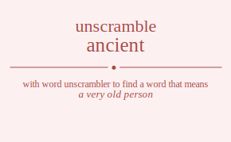

The word found after unscrambling ancient means that a very old person, a person who lived in ancient times, belonging to times long past especially of the historical period before the fall of the Western Roman Empire, very old, .

The word found after unscrambling ancient means that a very old person, a person who lived in ancient times, belonging to times long past especially of the historical period before the fall of the Western Roman Empire, very old, .
You can also find solutions for different combinations of letters in ancient like ancient ancietn ancinet ancinte anciten ancitne anceint anceitn ancenit ancenti ancetin ancetni ancniet ancnite ancneit ancneti ancntie ancntei anctien anctine anctein ancteni anctnie anctnei anicent anicetn anicnet anicnte anicten anictne aniecnt aniectn anienct anientc anietcn anietnc anincet anincte aninect aninetc anintce anintec anitcen anitcne anitecn anitenc anitnce anitnec anecint anecitn anecnit anecnti anectin anectni aneicnt aneictn aneinct aneintc aneitcn aneitnc anencit anencti anenict anenitc anentci anentic anetcin anetcni aneticn anetinc anetnci anetnic annciet anncite annceit annceti annctie annctei annicet annicte anniect annietc annitce annitec annecit annecti anneict anneitc annetci annetic anntcie anntcei anntice anntiec annteci annteic antcien antcine antcein antceni antcnie antcnei anticen anticne antiecn antienc antince antinec antecin antecni anteicn anteinc antenci antenic antncie antncei antnice antniec antneci antneic acnient acnietn acninet acninte acniten acnitne acneint acneitn acnenit acnenti acnetin acnetni acnniet acnnite acnneit acnneti acnntie acnntei acntien acntine acntein acnteni acntnie acntnei acinent acinetn acinnet acinnte acinten acintne aciennt acientn aciennt acientn acietnn acietnn acinnet acinnte acinent acinetn acintne acinten acitnen acitnne acitenn acitenn acitnne acitnen acenint acenitn acennit acennti acentin acentni aceinnt aceintn aceinnt aceintn aceitnn aceitnn acennit acennti acenint acenitn acentni acentin acetnin acetnni acetinn acetinn acetnni acetnin acnniet acnnite acnneit acnneti acnntie acnntei acninet acninte acnient acnietn acnitne acniten acnenit acnenti acneint acneitn acnetni acnetin acntnie acntnei acntine acntien acnteni acntein actnien actnine actnein actneni actnnie actnnei actinen actinne actienn actienn actinne actinen actenin actenni acteinn acteinn actenni actenin actnnie actnnei actnine actnien actneni actnein aincent aincetn aincnet aincnte aincten ainctne ainecnt ainectn ainenct ainentc ainetcn ainetnc ainncet ainncte ainnect ainnetc ainntce ainntec aintcen aintcne aintecn aintenc aintnce aintnec aicnent aicnetn aicnnet aicnnte aicnten aicntne aicennt aicentn aicennt aicentn aicetnn aicetnn aicnnet aicnnte aicnent aicnetn aicntne aicnten aictnen aictnne aictenn aictenn aictnne aictnen aiencnt aienctn aiennct aienntc aientcn aientnc aiecnnt aiecntn aiecnnt aiecntn aiectnn aiectnn aiennct aienntc aiencnt aienctn aientnc aientcn aietncn aietnnc aietcnn aietcnn aietnnc aietncn ainncet ainncte ainnect ainnetc ainntce ainntec aincnet aincnte aincent aincetn ainctne aincten ainenct ainentc ainecnt ainectn ainetnc ainetcn aintnce aintnec aintcne aintcen aintenc aintecn aitncen aitncne aitnecn aitnenc aitnnce aitnnec aitcnen aitcnne aitcenn aitcenn aitcnne aitcnen aitencn aitennc aitecnn aitecnn aitennc aitencn aitnnce aitnnec aitncne aitncen aitnenc aitnecn aencint aencitn aencnit aencnti aenctin aenctni aenicnt aenictn aeninct aenintc aenitcn aenitnc aenncit aenncti aennict aennitc aenntci aenntic aentcin aentcni aenticn aentinc aentnci aentnic aecnint aecnitn aecnnit aecnnti aecntin aecntni aecinnt aecintn aecinnt aecintn aecitnn aecitnn aecnnit aecnnti aecnint aecnitn aecntni aecntin aectnin aectnni aectinn aectinn aectnni aectnin aeincnt aeinctn aeinnct aeinntc aeintcn aeintnc aeicnnt aeicntn aeicnnt aeicntn aeictnn aeictnn aeinnct aeinntc aeincnt aeinctn aeintnc aeintcn aeitncn aeitnnc aeitcnn aeitcnn aeitnnc aeitncn aenncit aenncti aennict aennitc aenntci aenntic aencnit aencnti aencint aencitn aenctni aenctin aeninct aenintc aenicnt aenictn aenitnc aenitcn aentnci aentnic aentcni aentcin aentinc aenticn aetncin aetncni aetnicn aetninc aetnnci aetnnic aetcnin aetcnni aetcinn aetcinn aetcnni aetcnin aetincn aetinnc aeticnn aeticnn aetinnc aetincn aetnnci aetnnic aetncni aetncin aetninc aetnicn annciet anncite annceit annceti annctie annctei annicet annicte anniect annietc annitce annitec annecit annecti anneict anneitc annetci annetic anntcie anntcei anntice anntiec annteci annteic ancniet ancnite ancneit ancneti ancntie ancntei ancinet ancinte ancient ancietn ancitne anciten ancenit ancenti anceint anceitn ancetni ancetin anctnie anctnei anctine anctien ancteni anctein anincet anincte aninect aninetc anintce anintec anicnet anicnte anicent anicetn anictne anicten anienct anientc aniecnt aniectn anietnc anietcn anitnce anitnec anitcne anitcen anitenc anitecn anencit anencti anenict anenitc anentci anentic anecnit anecnti anecint anecitn anectni anectin aneinct aneintc aneicnt aneictn aneitnc aneitcn anetnci anetnic anetcni anetcin anetinc aneticn antncie antncei antnice antniec antneci antneic antcnie antcnei antcine antcien antceni antcein antince antinec anticne anticen antienc antiecn antenci antenic antecni antecin anteinc anteicn atncien atncine atncein atnceni atncnie atncnei atnicen atnicne atniecn atnienc atnince atninec atnecin atnecni atneicn atneinc atnenci atnenic atnncie atnncei atnnice atnniec atnneci atnneic atcnien atcnine atcnein atcneni atcnnie atcnnei atcinen atcinne atcienn atcienn atcinne atcinen atcenin atcenni atceinn atceinn atcenni atcenin atcnnie atcnnei atcnine atcnien atcneni atcnein atincen atincne atinecn atinenc atinnce atinnec aticnen aticnne aticenn aticenn aticnne aticnen atiencn atiennc atiecnn atiecnn atiennc atiencn atinnce atinnec atincne atincen atinenc atinecn atencin atencni atenicn ateninc atennci atennic atecnin atecnni atecinn atecinn atecnni atecnin ateincn ateinnc ateicnn ateicnn ateinnc ateincn atennci atennic atencni atencin ateninc atenicn atnncie atnncei atnnice atnniec atnneci atnneic atncnie atncnei atncine atncien atnceni atncein atnince atninec atnicne atnicen atnienc atniecn atnenci atnenic atnecni atnecin atneinc atneicn nacient nacietn nacinet nacinte naciten nacitne naceint naceitn nacenit nacenti nacetin nacetni nacniet nacnite nacneit nacneti nacntie nacntei nactien nactine nactein nacteni nactnie nactnei naicent naicetn naicnet naicnte naicten naictne naiecnt naiectn naienct naientc naietcn naietnc naincet naincte nainect nainetc naintce naintec naitcen naitcne naitecn naitenc naitnce naitnec naecint naecitn naecnit naecnti naectin naectni naeicnt naeictn naeinct naeintc naeitcn naeitnc naencit naencti naenict naenitc naentci naentic naetcin naetcni naeticn naetinc naetnci naetnic nanciet nancite nanceit nanceti nanctie nanctei nanicet nanicte naniect nanietc nanitce nanitec nanecit nanecti naneict naneitc nanetci nanetic nantcie nantcei nantice nantiec nanteci nanteic natcien natcine natcein natceni natcnie natcnei naticen naticne natiecn natienc natince natinec natecin natecni nateicn nateinc natenci natenic natncie natncei natnice natniec natneci natneic ncaient ncaietn ncainet ncainte ncaiten ncaitne ncaeint ncaeitn ncaenit ncaenti ncaetin ncaetni ncaniet ncanite ncaneit ncaneti ncantie ncantei ncatien ncatine ncatein ncateni ncatnie ncatnei nciaent nciaetn ncianet nciante nciaten nciatne ncieant ncieatn ncienat ncienta ncietan ncietna ncinaet ncinate ncineat ncineta ncintae ncintea ncitaen ncitane ncitean ncitena ncitnae ncitnea nceaint nceaitn nceanit nceanti nceatin nceatni nceiant nceiatn nceinat nceinta nceitan nceitna ncenait ncenati nceniat ncenita ncentai ncentia ncetain ncetani ncetian ncetina ncetnai ncetnia ncnaiet ncnaite ncnaeit ncnaeti ncnatie ncnatei ncniaet ncniate ncnieat ncnieta ncnitae ncnitea ncneait ncneati ncneiat ncneita ncnetai ncnetia ncntaie ncntaei ncntiae ncntiea ncnteai ncnteia nctaien nctaine nctaein nctaeni nctanie nctanei nctiaen nctiane nctiean nctiena nctinae nctinea ncteain ncteani ncteian ncteina nctenai nctenia nctnaie nctnaei nctniae nctniea nctneai nctneia niacent niacetn niacnet niacnte niacten niactne niaecnt niaectn niaenct niaentc niaetcn niaetnc niancet niancte nianect nianetc niantce niantec niatcen niatcne niatecn niatenc niatnce niatnec nicaent nicaetn nicanet nicante nicaten nicatne niceant niceatn nicenat nicenta nicetan nicetna nicnaet nicnate nicneat nicneta nicntae nicntea nictaen nictane nictean nictena nictnae nictnea nieacnt nieactn nieanct nieantc nieatcn nieatnc niecant niecatn niecnat niecnta niectan niectna nienact nienatc niencat niencta nientac nientca nietacn nietanc nietcan nietcna nietnac nietnca ninacet ninacte ninaect ninaetc ninatce ninatec nincaet nincate ninceat ninceta ninctae ninctea nineact nineatc ninecat ninecta ninetac ninetca nintace nintaec nintcae nintcea ninteac ninteca nitacen nitacne nitaecn nitaenc nitance nitanec nitcaen nitcane nitcean nitcena nitcnae nitcnea niteacn niteanc nitecan nitecna nitenac nitenca nitnace nitnaec nitncae nitncea nitneac nitneca neacint neacitn neacnit neacnti neactin neactni neaicnt neaictn neainct neaintc neaitcn neaitnc neancit neancti neanict neanitc neantci neantic neatcin neatcni neaticn neatinc neatnci neatnic necaint necaitn necanit necanti necatin necatni neciant neciatn necinat necinta necitan necitna necnait necnati necniat necnita necntai necntia nectain nectani nectian nectina nectnai nectnia neiacnt neiactn neianct neiantc neiatcn neiatnc neicant neicatn neicnat neicnta neictan neictna neinact neinatc neincat neincta neintac neintca neitacn neitanc neitcan neitcna neitnac neitnca nenacit nenacti nenaict nenaitc nenatci nenatic nencait nencati nenciat nencita nenctai nenctia neniact neniatc nenicat nenicta nenitac nenitca nentaci nentaic nentcai nentcia nentiac nentica netacin netacni netaicn netainc netanci netanic netcain netcani netcian netcina netcnai netcnia netiacn netianc netican neticna netinac netinca netnaci netnaic netncai netncia netniac netnica nnaciet nnacite nnaceit nnaceti nnactie nnactei nnaicet nnaicte nnaiect nnaietc nnaitce nnaitec nnaecit nnaecti nnaeict nnaeitc nnaetci nnaetic nnatcie nnatcei nnatice nnatiec nnateci nnateic nncaiet nncaite nncaeit nncaeti nncatie nncatei nnciaet nnciate nncieat nncieta nncitae nncitea nnceait nnceati nnceiat nnceita nncetai nncetia nnctaie nnctaei nnctiae nnctiea nncteai nncteia nniacet nniacte nniaect nniaetc nniatce nniatec nnicaet nnicate nniceat nniceta nnictae nnictea nnieact nnieatc nniecat nniecta nnietac nnietca nnitace nnitaec nnitcae nnitcea nniteac nniteca nneacit nneacti nneaict nneaitc nneatci nneatic nnecait nnecati nneciat nnecita nnectai nnectia nneiact nneiatc nneicat nneicta nneitac nneitca nnetaci nnetaic nnetcai nnetcia nnetiac nnetica nntacie nntacei nntaice nntaiec nntaeci nntaeic nntcaie nntcaei nntciae nntciea nntceai nntceia nntiace nntiaec nnticae nnticea nntieac nntieca nnteaci nnteaic nntecai nntecia nnteiac nnteica ntacien ntacine ntacein ntaceni ntacnie ntacnei ntaicen ntaicne ntaiecn ntaienc ntaince ntainec ntaecin ntaecni ntaeicn ntaeinc ntaenci ntaenic ntancie ntancei ntanice ntaniec ntaneci ntaneic ntcaien ntcaine ntcaein ntcaeni ntcanie ntcanei ntciaen ntciane ntciean ntciena ntcinae ntcinea ntceain ntceani ntceian ntceina ntcenai ntcenia ntcnaie ntcnaei ntcniae ntcniea ntcneai ntcneia ntiacen ntiacne ntiaecn ntiaenc ntiance ntianec nticaen nticane nticean nticena nticnae nticnea ntieacn ntieanc ntiecan ntiecna ntienac ntienca ntinace ntinaec ntincae ntincea ntineac ntineca nteacin nteacni nteaicn nteainc nteanci nteanic ntecain ntecani ntecian ntecina ntecnai ntecnia nteiacn nteianc nteican nteicna nteinac nteinca ntenaci ntenaic ntencai ntencia nteniac ntenica ntnacie ntnacei ntnaice ntnaiec ntnaeci ntnaeic ntncaie ntncaei ntnciae ntnciea ntnceai ntnceia ntniace ntniaec ntnicae ntnicea ntnieac ntnieca ntneaci ntneaic ntnecai ntnecia ntneiac ntneica canient canietn caninet caninte caniten canitne caneint caneitn canenit canenti canetin canetni canniet cannite canneit canneti canntie canntei cantien cantine cantein canteni cantnie cantnei cainent cainetn cainnet cainnte cainten caintne caiennt caientn caiennt caientn caietnn caietnn cainnet cainnte cainent cainetn caintne cainten caitnen caitnne caitenn caitenn caitnne caitnen caenint caenitn caennit caennti caentin caentni caeinnt caeintn caeinnt caeintn caeitnn caeitnn caennit caennti caenint caenitn caentni caentin caetnin caetnni caetinn caetinn caetnni caetnin canniet cannite canneit canneti canntie canntei caninet caninte canient canietn canitne caniten canenit canenti caneint caneitn canetni canetin cantnie cantnei cantine cantien canteni cantein catnien catnine catnein catneni catnnie catnnei catinen catinne catienn catienn catinne catinen catenin catenni cateinn cateinn catenni catenin catnnie catnnei catnine catnien catneni catnein cnaient cnaietn cnainet cnainte cnaiten cnaitne cnaeint cnaeitn cnaenit cnaenti cnaetin cnaetni cnaniet cnanite cnaneit cnaneti cnantie cnantei cnatien cnatine cnatein cnateni cnatnie cnatnei cniaent cniaetn cnianet cniante cniaten cniatne cnieant cnieatn cnienat cnienta cnietan cnietna cninaet cninate cnineat cnineta cnintae cnintea cnitaen cnitane cnitean cnitena cnitnae cnitnea cneaint cneaitn cneanit cneanti cneatin cneatni cneiant cneiatn cneinat cneinta cneitan cneitna cnenait cnenati cneniat cnenita cnentai cnentia cnetain cnetani cnetian cnetina cnetnai cnetnia cnnaiet cnnaite cnnaeit cnnaeti cnnatie cnnatei cnniaet cnniate cnnieat cnnieta cnnitae cnnitea cnneait cnneati cnneiat cnneita cnnetai cnnetia cnntaie cnntaei cnntiae cnntiea cnnteai cnnteia cntaien cntaine cntaein cntaeni cntanie cntanei cntiaen cntiane cntiean cntiena cntinae cntinea cnteain cnteani cnteian cnteina cntenai cntenia cntnaie cntnaei cntniae cntniea cntneai cntneia cianent cianetn ciannet ciannte cianten ciantne ciaennt ciaentn ciaennt ciaentn ciaetnn ciaetnn ciannet ciannte cianent cianetn ciantne cianten ciatnen ciatnne ciatenn ciatenn ciatnne ciatnen cinaent cinaetn cinanet cinante cinaten cinatne cineant cineatn cinenat cinenta cinetan cinetna cinnaet cinnate cinneat cinneta cinntae cinntea cintaen cintane cintean cintena cintnae cintnea cieannt cieantn cieannt cieantn cieatnn cieatnn cienant cienatn ciennat ciennta cientan cientna cienant cienatn ciennat ciennta cientan cientna cietann cietann cietnan cietnna cietnan cietnna cinanet cinante cinaent cinaetn cinatne cinaten cinnaet cinnate cinneat cinneta cinntae cinntea cineant cineatn cinenat cinenta cinetan cinetna cintane cintaen cintnae cintnea cintean cintena citanen citanne citaenn citaenn citanne citanen citnaen citnane citnean citnena citnnae citnnea citeann citeann citenan citenna citenan citenna citnane citnaen citnnae citnnea citnean citnena ceanint ceanitn ceannit ceannti ceantin ceantni ceainnt ceaintn ceainnt ceaintn ceaitnn ceaitnn ceannit ceannti ceanint ceanitn ceantni ceantin ceatnin ceatnni ceatinn ceatinn ceatnni ceatnin cenaint cenaitn cenanit cenanti cenatin cenatni ceniant ceniatn ceninat ceninta cenitan cenitna cennait cennati cenniat cennita cenntai cenntia centain centani centian centina centnai centnia ceiannt ceiantn ceiannt ceiantn ceiatnn ceiatnn ceinant ceinatn ceinnat ceinnta ceintan ceintna ceinant ceinatn ceinnat ceinnta ceintan ceintna ceitann ceitann ceitnan ceitnna ceitnan ceitnna cenanit cenanti cenaint cenaitn cenatni cenatin cennait cennati cenniat cennita cenntai cenntia ceniant ceniatn ceninat ceninta cenitan cenitna centani centain centnai centnia centian centina cetanin cetanni cetainn cetainn cetanni cetanin cetnain cetnani cetnian cetnina cetnnai cetnnia cetiann cetiann cetinan cetinna cetinan cetinna cetnani cetnain cetnnai cetnnia cetnian cetnina cnaniet cnanite cnaneit cnaneti cnantie cnantei cnainet cnainte cnaient cnaietn cnaitne cnaiten cnaenit cnaenti cnaeint cnaeitn cnaetni cnaetin cnatnie cnatnei cnatine cnatien cnateni cnatein cnnaiet cnnaite cnnaeit cnnaeti cnnatie cnnatei cnniaet cnniate cnnieat cnnieta cnnitae cnnitea cnneait cnneati cnneiat cnneita cnnetai cnnetia cnntaie cnntaei cnntiae cnntiea cnnteai cnnteia cnianet cniante cniaent cniaetn cniatne cniaten cninaet cninate cnineat cnineta cnintae cnintea cnieant cnieatn cnienat cnienta cnietan cnietna cnitane cnitaen cnitnae cnitnea cnitean cnitena cneanit cneanti cneaint cneaitn cneatni cneatin cnenait cnenati cneniat cnenita cnentai cnentia cneiant cneiatn cneinat cneinta cneitan cneitna cnetani cnetain cnetnai cnetnia cnetian cnetina cntanie cntanei cntaine cntaien cntaeni cntaein cntnaie cntnaei cntniae cntniea cntneai cntneia cntiane cntiaen cntinae cntinea cntiean cntiena cnteani cnteain cntenai cntenia cnteian cnteina ctanien ctanine ctanein ctaneni ctannie ctannei ctainen ctainne ctaienn ctaienn ctainne ctainen ctaenin ctaenni ctaeinn ctaeinn ctaenni ctaenin ctannie ctannei ctanine ctanien ctaneni ctanein ctnaien ctnaine ctnaein ctnaeni ctnanie ctnanei ctniaen ctniane ctniean ctniena ctninae ctninea ctneain ctneani ctneian ctneina ctnenai ctnenia ctnnaie ctnnaei ctnniae ctnniea ctnneai ctnneia ctianen ctianne ctiaenn ctiaenn ctianne ctianen ctinaen ctinane ctinean ctinena ctinnae ctinnea ctieann ctieann ctienan ctienna ctienan ctienna ctinane ctinaen ctinnae ctinnea ctinean ctinena cteanin cteanni cteainn cteainn cteanni cteanin ctenain ctenani ctenian ctenina ctennai ctennia cteiann cteiann cteinan cteinna cteinan cteinna ctenani ctenain ctennai ctennia ctenian ctenina ctnanie ctnanei ctnaine ctnaien ctnaeni ctnaein ctnnaie ctnnaei ctnniae ctnniea ctnneai ctnneia ctniane ctniaen ctninae ctninea ctniean ctniena ctneani ctneain ctnenai ctnenia ctneian ctneina iancent iancetn iancnet iancnte iancten ianctne ianecnt ianectn ianenct ianentc ianetcn ianetnc ianncet ianncte iannect iannetc ianntce ianntec iantcen iantcne iantecn iantenc iantnce iantnec iacnent iacnetn iacnnet iacnnte iacnten iacntne iacennt iacentn iacennt iacentn iacetnn iacetnn iacnnet iacnnte iacnent iacnetn iacntne iacnten iactnen iactnne iactenn iactenn iactnne iactnen iaencnt iaenctn iaennct iaenntc iaentcn iaentnc iaecnnt iaecntn iaecnnt iaecntn iaectnn iaectnn iaennct iaenntc iaencnt iaenctn iaentnc iaentcn iaetncn iaetnnc iaetcnn iaetcnn iaetnnc iaetncn ianncet ianncte iannect iannetc ianntce ianntec iancnet iancnte iancent iancetn ianctne iancten ianenct ianentc ianecnt ianectn ianetnc ianetcn iantnce iantnec iantcne iantcen iantenc iantecn iatncen iatncne iatnecn iatnenc iatnnce iatnnec iatcnen iatcnne iatcenn iatcenn iatcnne iatcnen iatencn iatennc iatecnn iatecnn iatennc iatencn iatnnce iatnnec iatncne iatncen iatnenc iatnecn inacent inacetn inacnet inacnte inacten inactne inaecnt inaectn inaenct inaentc inaetcn inaetnc inancet inancte inanect inanetc inantce inantec inatcen inatcne inatecn inatenc inatnce inatnec incaent incaetn incanet incante incaten incatne inceant inceatn incenat incenta incetan incetna incnaet incnate incneat incneta incntae incntea inctaen inctane inctean inctena inctnae inctnea ineacnt ineactn ineanct ineantc ineatcn ineatnc inecant inecatn inecnat inecnta inectan inectna inenact inenatc inencat inencta inentac inentca inetacn inetanc inetcan inetcna inetnac inetnca innacet innacte innaect innaetc innatce innatec inncaet inncate innceat innceta innctae innctea inneact inneatc innecat innecta innetac innetca inntace inntaec inntcae inntcea innteac innteca intacen intacne intaecn intaenc intance intanec intcaen intcane intcean intcena intcnae intcnea inteacn inteanc intecan intecna intenac intenca intnace intnaec intncae intncea intneac intneca icanent icanetn icannet icannte icanten icantne icaennt icaentn icaennt icaentn icaetnn icaetnn icannet icannte icanent icanetn icantne icanten icatnen icatnne icatenn icatenn icatnne icatnen icnaent icnaetn icnanet icnante icnaten icnatne icneant icneatn icnenat icnenta icnetan icnetna icnnaet icnnate icnneat icnneta icnntae icnntea icntaen icntane icntean icntena icntnae icntnea iceannt iceantn iceannt iceantn iceatnn iceatnn icenant icenatn icennat icennta icentan icentna icenant icenatn icennat icennta icentan icentna icetann icetann icetnan icetnna icetnan icetnna icnanet icnante icnaent icnaetn icnatne icnaten icnnaet icnnate icnneat icnneta icnntae icnntea icneant icneatn icnenat icnenta icnetan icnetna icntane icntaen icntnae icntnea icntean icntena ictanen ictanne ictaenn ictaenn ictanne ictanen ictnaen ictnane ictnean ictnena ictnnae ictnnea icteann icteann ictenan ictenna ictenan ictenna ictnane ictnaen ictnnae ictnnea ictnean ictnena ieancnt ieanctn ieannct ieanntc ieantcn ieantnc ieacnnt ieacntn ieacnnt ieacntn ieactnn ieactnn ieannct ieanntc ieancnt ieanctn ieantnc ieantcn ieatncn ieatnnc ieatcnn ieatcnn ieatnnc ieatncn ienacnt ienactn ienanct ienantc ienatcn ienatnc iencant iencatn iencnat iencnta ienctan ienctna iennact iennatc ienncat ienncta ienntac ienntca ientacn ientanc ientcan ientcna ientnac ientnca iecannt iecantn iecannt iecantn iecatnn iecatnn iecnant iecnatn iecnnat iecnnta iecntan iecntna iecnant iecnatn iecnnat iecnnta iecntan iecntna iectann iectann iectnan iectnna iectnan iectnna ienanct ienantc ienacnt ienactn ienatnc ienatcn iennact iennatc ienncat ienncta ienntac ienntca iencant iencatn iencnat iencnta ienctan ienctna ientanc ientacn ientnac ientnca ientcan ientcna ietancn ietannc ietacnn ietacnn ietannc ietancn ietnacn ietnanc ietncan ietncna ietnnac ietnnca ietcann ietcann ietcnan ietcnna ietcnan ietcnna ietnanc ietnacn ietnnac ietnnca ietncan ietncna inancet inancte inanect inanetc inantce inantec inacnet inacnte inacent inacetn inactne inacten inaenct inaentc inaecnt inaectn inaetnc inaetcn inatnce inatnec inatcne inatcen inatenc inatecn innacet innacte innaect innaetc innatce innatec inncaet inncate innceat innceta innctae innctea inneact inneatc innecat innecta innetac innetca inntace inntaec inntcae inntcea innteac innteca incanet incante incaent incaetn incatne incaten incnaet incnate incneat incneta incntae incntea inceant inceatn incenat incenta incetan incetna inctane inctaen inctnae inctnea inctean inctena ineanct ineantc ineacnt ineactn ineatnc ineatcn inenact inenatc inencat inencta inentac inentca inecant inecatn inecnat inecnta inectan inectna inetanc inetacn inetnac inetnca inetcan inetcna intance intanec intacne intacen intaenc intaecn intnace intnaec intncae intncea intneac intneca intcane intcaen intcnae intcnea intcean intcena inteanc inteacn intenac intenca intecan intecna itancen itancne itanecn itanenc itannce itannec itacnen itacnne itacenn itacenn itacnne itacnen itaencn itaennc itaecnn itaecnn itaennc itaencn itannce itannec itancne itancen itanenc itanecn itnacen itnacne itnaecn itnaenc itnance itnanec itncaen itncane itncean itncena itncnae itncnea itneacn itneanc itnecan itnecna itnenac itnenca itnnace itnnaec itnncae itnncea itnneac itnneca itcanen itcanne itcaenn itcaenn itcanne itcanen itcnaen itcnane itcnean itcnena itcnnae itcnnea itceann itceann itcenan itcenna itcenan itcenna itcnane itcnaen itcnnae itcnnea itcnean itcnena iteancn iteannc iteacnn iteacnn iteannc iteancn itenacn itenanc itencan itencna itennac itennca itecann itecann itecnan itecnna itecnan itecnna itenanc itenacn itennac itennca itencan itencna itnance itnanec itnacne itnacen itnaenc itnaecn itnnace itnnaec itnncae itnncea itnneac itnneca itncane itncaen itncnae itncnea itncean itncena itneanc itneacn itnenac itnenca itnecan itnecna eancint eancitn eancnit eancnti eanctin eanctni eanicnt eanictn eaninct eanintc eanitcn eanitnc eanncit eanncti eannict eannitc eanntci eanntic eantcin eantcni eanticn eantinc eantnci eantnic eacnint eacnitn eacnnit eacnnti eacntin eacntni eacinnt eacintn eacinnt eacintn eacitnn eacitnn eacnnit eacnnti eacnint eacnitn eacntni eacntin eactnin eactnni eactinn eactinn eactnni eactnin eaincnt eainctn eainnct eainntc eaintcn eaintnc eaicnnt eaicntn eaicnnt eaicntn eaictnn eaictnn eainnct eainntc eaincnt eainctn eaintnc eaintcn eaitncn eaitnnc eaitcnn eaitcnn eaitnnc eaitncn eanncit eanncti eannict eannitc eanntci eanntic eancnit eancnti eancint eancitn eanctni eanctin eaninct eanintc eanicnt eanictn eanitnc eanitcn eantnci eantnic eantcni eantcin eantinc eanticn eatncin eatncni eatnicn eatninc eatnnci eatnnic eatcnin eatcnni eatcinn eatcinn eatcnni eatcnin eatincn eatinnc eaticnn eaticnn eatinnc eatincn eatnnci eatnnic eatncni eatncin eatninc eatnicn enacint enacitn enacnit enacnti enactin enactni enaicnt enaictn enainct enaintc enaitcn enaitnc enancit enancti enanict enanitc enantci enantic enatcin enatcni enaticn enatinc enatnci enatnic encaint encaitn encanit encanti encatin encatni enciant enciatn encinat encinta encitan encitna encnait encnati encniat encnita encntai encntia enctain enctani enctian enctina enctnai enctnia eniacnt eniactn enianct eniantc eniatcn eniatnc enicant enicatn enicnat enicnta enictan enictna eninact eninatc enincat enincta enintac enintca enitacn enitanc enitcan enitcna enitnac enitnca ennacit ennacti ennaict ennaitc ennatci ennatic enncait enncati ennciat enncita ennctai ennctia enniact enniatc ennicat ennicta ennitac ennitca enntaci enntaic enntcai enntcia enntiac enntica entacin entacni entaicn entainc entanci entanic entcain entcani entcian entcina entcnai entcnia entiacn entianc entican enticna entinac entinca entnaci entnaic entncai entncia entniac entnica ecanint ecanitn ecannit ecannti ecantin ecantni ecainnt ecaintn ecainnt ecaintn ecaitnn ecaitnn ecannit ecannti ecanint ecanitn ecantni ecantin ecatnin ecatnni ecatinn ecatinn ecatnni ecatnin ecnaint ecnaitn ecnanit ecnanti ecnatin ecnatni ecniant ecniatn ecninat ecninta ecnitan ecnitna ecnnait ecnnati ecnniat ecnnita ecnntai ecnntia ecntain ecntani ecntian ecntina ecntnai ecntnia eciannt eciantn eciannt eciantn eciatnn eciatnn ecinant ecinatn ecinnat ecinnta ecintan ecintna ecinant ecinatn ecinnat ecinnta ecintan ecintna ecitann ecitann ecitnan ecitnna ecitnan ecitnna ecnanit ecnanti ecnaint ecnaitn ecnatni ecnatin ecnnait ecnnati ecnniat ecnnita ecnntai ecnntia ecniant ecniatn ecninat ecninta ecnitan ecnitna ecntani ecntain ecntnai ecntnia ecntian ecntina ectanin ectanni ectainn ectainn ectanni ectanin ectnain ectnani ectnian ectnina ectnnai ectnnia ectiann ectiann ectinan ectinna ectinan ectinna ectnani ectnain ectnnai ectnnia ectnian ectnina eiancnt eianctn eiannct eianntc eiantcn eiantnc eiacnnt eiacntn eiacnnt eiacntn eiactnn eiactnn eiannct eianntc eiancnt eianctn eiantnc eiantcn eiatncn eiatnnc eiatcnn eiatcnn eiatnnc eiatncn einacnt einactn einanct einantc einatcn einatnc eincant eincatn eincnat eincnta einctan einctna einnact einnatc einncat einncta einntac einntca eintacn eintanc eintcan eintcna eintnac eintnca eicannt eicantn eicannt eicantn eicatnn eicatnn eicnant eicnatn eicnnat eicnnta eicntan eicntna eicnant eicnatn eicnnat eicnnta eicntan eicntna eictann eictann eictnan eictnna eictnan eictnna einanct einantc einacnt einactn einatnc einatcn einnact einnatc einncat einncta einntac einntca eincant eincatn eincnat eincnta einctan einctna eintanc eintacn eintnac eintnca eintcan eintcna eitancn eitannc eitacnn eitacnn eitannc eitancn eitnacn eitnanc eitncan eitncna eitnnac eitnnca eitcann eitcann eitcnan eitcnna eitcnan eitcnna eitnanc eitnacn eitnnac eitnnca eitncan eitncna enancit enancti enanict enanitc enantci enantic enacnit enacnti enacint enacitn enactni enactin enainct enaintc enaicnt enaictn enaitnc enaitcn enatnci enatnic enatcni enatcin enatinc enaticn ennacit ennacti ennaict ennaitc ennatci ennatic enncait enncati ennciat enncita ennctai ennctia enniact enniatc ennicat ennicta ennitac ennitca enntaci enntaic enntcai enntcia enntiac enntica encanit encanti encaint encaitn encatni encatin encnait encnati encniat encnita encntai encntia enciant enciatn encinat encinta encitan encitna enctani enctain enctnai enctnia enctian enctina enianct eniantc eniacnt eniactn eniatnc eniatcn eninact eninatc enincat enincta enintac enintca enicant enicatn enicnat enicnta enictan enictna enitanc enitacn enitnac enitnca enitcan enitcna entanci entanic entacni entacin entainc entaicn entnaci entnaic entncai entncia entniac entnica entcani entcain entcnai entcnia entcian entcina entianc entiacn entinac entinca entican enticna etancin etancni etanicn etaninc etannci etannic etacnin etacnni etacinn etacinn etacnni etacnin etaincn etainnc etaicnn etaicnn etainnc etaincn etannci etannic etancni etancin etaninc etanicn etnacin etnacni etnaicn etnainc etnanci etnanic etncain etncani etncian etncina etncnai etncnia etniacn etnianc etnican etnicna etninac etninca etnnaci etnnaic etnncai etnncia etnniac etnnica etcanin etcanni etcainn etcainn etcanni etcanin etcnain etcnani etcnian etcnina etcnnai etcnnia etciann etciann etcinan etcinna etcinan etcinna etcnani etcnain etcnnai etcnnia etcnian etcnina etiancn etiannc etiacnn etiacnn etiannc etiancn etinacn etinanc etincan etincna etinnac etinnca eticann eticann eticnan eticnna eticnan eticnna etinanc etinacn etinnac etinnca etincan etincna etnanci etnanic etnacni etnacin etnainc etnaicn etnnaci etnnaic etnncai etnncia etnniac etnnica etncani etncain etncnai etncnia etncian etncina etnianc etniacn etninac etninca etnican etnicna nanciet nancite nanceit nanceti nanctie nanctei nanicet nanicte naniect nanietc nanitce nanitec nanecit nanecti naneict naneitc nanetci nanetic nantcie nantcei nantice nantiec nanteci nanteic nacniet nacnite nacneit nacneti nacntie nacntei nacinet nacinte nacient nacietn nacitne naciten nacenit nacenti naceint naceitn nacetni nacetin nactnie nactnei nactine nactien nacteni nactein naincet naincte nainect nainetc naintce naintec naicnet naicnte naicent naicetn naictne naicten naienct naientc naiecnt naiectn naietnc naietcn naitnce naitnec naitcne naitcen naitenc naitecn naencit naencti naenict naenitc naentci naentic naecnit naecnti naecint naecitn naectni naectin naeinct naeintc naeicnt naeictn naeitnc naeitcn naetnci naetnic naetcni naetcin naetinc naeticn natncie natncei natnice natniec natneci natneic natcnie natcnei natcine natcien natceni natcein natince natinec naticne naticen natienc natiecn natenci natenic natecni natecin nateinc nateicn nnaciet nnacite nnaceit nnaceti nnactie nnactei nnaicet nnaicte nnaiect nnaietc nnaitce nnaitec nnaecit nnaecti nnaeict nnaeitc nnaetci nnaetic nnatcie nnatcei nnatice nnatiec nnateci nnateic nncaiet nncaite nncaeit nncaeti nncatie nncatei nnciaet nnciate nncieat nncieta nncitae nncitea nnceait nnceati nnceiat nnceita nncetai nncetia nnctaie nnctaei nnctiae nnctiea nncteai nncteia nniacet nniacte nniaect nniaetc nniatce nniatec nnicaet nnicate nniceat nniceta nnictae nnictea nnieact nnieatc nniecat nniecta nnietac nnietca nnitace nnitaec nnitcae nnitcea nniteac nniteca nneacit nneacti nneaict nneaitc nneatci nneatic nnecait nnecati nneciat nnecita nnectai nnectia nneiact nneiatc nneicat nneicta nneitac nneitca nnetaci nnetaic nnetcai nnetcia nnetiac nnetica nntacie nntacei nntaice nntaiec nntaeci nntaeic nntcaie nntcaei nntciae nntciea nntceai nntceia nntiace nntiaec nnticae nnticea nntieac nntieca nnteaci nnteaic nntecai nntecia nnteiac nnteica ncaniet ncanite ncaneit ncaneti ncantie ncantei ncainet ncainte ncaient ncaietn ncaitne ncaiten ncaenit ncaenti ncaeint ncaeitn ncaetni ncaetin ncatnie ncatnei ncatine ncatien ncateni ncatein ncnaiet ncnaite ncnaeit ncnaeti ncnatie ncnatei ncniaet ncniate ncnieat ncnieta ncnitae ncnitea ncneait ncneati ncneiat ncneita ncnetai ncnetia ncntaie ncntaei ncntiae ncntiea ncnteai ncnteia ncianet nciante nciaent nciaetn nciatne nciaten ncinaet ncinate ncineat ncineta ncintae ncintea ncieant ncieatn ncienat ncienta ncietan ncietna ncitane ncitaen ncitnae ncitnea ncitean ncitena nceanit nceanti nceaint nceaitn nceatni nceatin ncenait ncenati nceniat ncenita ncentai ncentia nceiant nceiatn nceinat nceinta nceitan nceitna ncetani ncetain ncetnai ncetnia ncetian ncetina nctanie nctanei nctaine nctaien nctaeni nctaein nctnaie nctnaei nctniae nctniea nctneai nctneia nctiane nctiaen nctinae nctinea nctiean nctiena ncteani ncteain nctenai nctenia ncteian ncteina niancet niancte nianect nianetc niantce niantec niacnet niacnte niacent niacetn niactne niacten niaenct niaentc niaecnt niaectn niaetnc niaetcn niatnce niatnec niatcne niatcen niatenc niatecn ninacet ninacte ninaect ninaetc ninatce ninatec nincaet nincate ninceat ninceta ninctae ninctea nineact nineatc ninecat ninecta ninetac ninetca nintace nintaec nintcae nintcea ninteac ninteca nicanet nicante nicaent nicaetn nicatne nicaten nicnaet nicnate nicneat nicneta nicntae nicntea niceant niceatn nicenat nicenta nicetan nicetna nictane nictaen nictnae nictnea nictean nictena nieanct nieantc nieacnt nieactn nieatnc nieatcn nienact nienatc niencat niencta nientac nientca niecant niecatn niecnat niecnta niectan niectna nietanc nietacn nietnac nietnca nietcan nietcna nitance nitanec nitacne nitacen nitaenc nitaecn nitnace nitnaec nitncae nitncea nitneac nitneca nitcane nitcaen nitcnae nitcnea nitcean nitcena niteanc niteacn nitenac nitenca nitecan nitecna neancit neancti neanict neanitc neantci neantic neacnit neacnti neacint neacitn neactni neactin neainct neaintc neaicnt neaictn neaitnc neaitcn neatnci neatnic neatcni neatcin neatinc neaticn nenacit nenacti nenaict nenaitc nenatci nenatic nencait nencati nenciat nencita nenctai nenctia neniact neniatc nenicat nenicta nenitac nenitca nentaci nentaic nentcai nentcia nentiac nentica necanit necanti necaint necaitn necatni necatin necnait necnati necniat necnita necntai necntia neciant neciatn necinat necinta necitan necitna nectani nectain nectnai nectnia nectian nectina neianct neiantc neiacnt neiactn neiatnc neiatcn neinact neinatc neincat neincta neintac neintca neicant neicatn neicnat neicnta neictan neictna neitanc neitacn neitnac neitnca neitcan neitcna netanci netanic netacni netacin netainc netaicn netnaci netnaic netncai netncia netniac netnica netcani netcain netcnai netcnia netcian netcina netianc netiacn netinac netinca netican neticna ntancie ntancei ntanice ntaniec ntaneci ntaneic ntacnie ntacnei ntacine ntacien ntaceni ntacein ntaince ntainec ntaicne ntaicen ntaienc ntaiecn ntaenci ntaenic ntaecni ntaecin ntaeinc ntaeicn ntnacie ntnacei ntnaice ntnaiec ntnaeci ntnaeic ntncaie ntncaei ntnciae ntnciea ntnceai ntnceia ntniace ntniaec ntnicae ntnicea ntnieac ntnieca ntneaci ntneaic ntnecai ntnecia ntneiac ntneica ntcanie ntcanei ntcaine ntcaien ntcaeni ntcaein ntcnaie ntcnaei ntcniae ntcniea ntcneai ntcneia ntciane ntciaen ntcinae ntcinea ntciean ntciena ntceani ntceain ntcenai ntcenia ntceian ntceina ntiance ntianec ntiacne ntiacen ntiaenc ntiaecn ntinace ntinaec ntincae ntincea ntineac ntineca nticane nticaen nticnae nticnea nticean nticena ntieanc ntieacn ntienac ntienca ntiecan ntiecna nteanci nteanic nteacni nteacin nteainc nteaicn ntenaci ntenaic ntencai ntencia nteniac ntenica ntecani ntecain ntecnai ntecnia ntecian ntecina nteianc nteiacn nteinac nteinca nteican nteicna tancien tancine tancein tanceni tancnie tancnei tanicen tanicne taniecn tanienc tanince taninec tanecin tanecni taneicn taneinc tanenci tanenic tanncie tanncei tannice tanniec tanneci tanneic tacnien tacnine tacnein tacneni tacnnie tacnnei tacinen tacinne tacienn tacienn tacinne tacinen tacenin tacenni taceinn taceinn tacenni tacenin tacnnie tacnnei tacnine tacnien tacneni tacnein taincen taincne tainecn tainenc tainnce tainnec taicnen taicnne taicenn taicenn taicnne taicnen taiencn taiennc taiecnn taiecnn taiennc taiencn tainnce tainnec taincne taincen tainenc tainecn taencin taencni taenicn taeninc taennci taennic taecnin taecnni taecinn taecinn taecnni taecnin taeincn taeinnc taeicnn taeicnn taeinnc taeincn taennci taennic taencni taencin taeninc taenicn tanncie tanncei tannice tanniec tanneci tanneic tancnie tancnei tancine tancien tanceni tancein tanince taninec tanicne tanicen tanienc taniecn tanenci tanenic tanecni tanecin taneinc taneicn tnacien tnacine tnacein tnaceni tnacnie tnacnei tnaicen tnaicne tnaiecn tnaienc tnaince tnainec tnaecin tnaecni tnaeicn tnaeinc tnaenci tnaenic tnancie tnancei tnanice tnaniec tnaneci tnaneic tncaien tncaine tncaein tncaeni tncanie tncanei tnciaen tnciane tnciean tnciena tncinae tncinea tnceain tnceani tnceian tnceina tncenai tncenia tncnaie tncnaei tncniae tncniea tncneai tncneia tniacen tniacne tniaecn tniaenc tniance tnianec tnicaen tnicane tnicean tnicena tnicnae tnicnea tnieacn tnieanc tniecan tniecna tnienac tnienca tninace tninaec tnincae tnincea tnineac tnineca tneacin tneacni tneaicn tneainc tneanci tneanic tnecain tnecani tnecian tnecina tnecnai tnecnia tneiacn tneianc tneican tneicna tneinac tneinca tnenaci tnenaic tnencai tnencia tneniac tnenica tnnacie tnnacei tnnaice tnnaiec tnnaeci tnnaeic tnncaie tnncaei tnnciae tnnciea tnnceai tnnceia tnniace tnniaec tnnicae tnnicea tnnieac tnnieca tnneaci tnneaic tnnecai tnnecia tnneiac tnneica tcanien tcanine tcanein tcaneni tcannie tcannei tcainen tcainne tcaienn tcaienn tcainne tcainen tcaenin tcaenni tcaeinn tcaeinn tcaenni tcaenin tcannie tcannei tcanine tcanien tcaneni tcanein tcnaien tcnaine tcnaein tcnaeni tcnanie tcnanei tcniaen tcniane tcniean tcniena tcninae tcninea tcneain tcneani tcneian tcneina tcnenai tcnenia tcnnaie tcnnaei tcnniae tcnniea tcnneai tcnneia tcianen tcianne tciaenn tciaenn tcianne tcianen tcinaen tcinane tcinean tcinena tcinnae tcinnea tcieann tcieann tcienan tcienna tcienan tcienna tcinane tcinaen tcinnae tcinnea tcinean tcinena tceanin tceanni tceainn tceainn tceanni tceanin tcenain tcenani tcenian tcenina tcennai tcennia tceiann tceiann tceinan tceinna tceinan tceinna tcenani tcenain tcennai tcennia tcenian tcenina tcnanie tcnanei tcnaine tcnaien tcnaeni tcnaein tcnnaie tcnnaei tcnniae tcnniea tcnneai tcnneia tcniane tcniaen tcninae tcninea tcniean tcniena tcneani tcneain tcnenai tcnenia tcneian tcneina tiancen tiancne tianecn tianenc tiannce tiannec tiacnen tiacnne tiacenn tiacenn tiacnne tiacnen tiaencn tiaennc tiaecnn tiaecnn tiaennc tiaencn tiannce tiannec tiancne tiancen tianenc tianecn tinacen tinacne tinaecn tinaenc tinance tinanec tincaen tincane tincean tincena tincnae tincnea tineacn tineanc tinecan tinecna tinenac tinenca tinnace tinnaec tinncae tinncea tinneac tinneca ticanen ticanne ticaenn ticaenn ticanne ticanen ticnaen ticnane ticnean ticnena ticnnae ticnnea ticeann ticeann ticenan ticenna ticenan ticenna ticnane ticnaen ticnnae ticnnea ticnean ticnena tieancn tieannc tieacnn tieacnn tieannc tieancn tienacn tienanc tiencan tiencna tiennac tiennca tiecann tiecann tiecnan tiecnna tiecnan tiecnna tienanc tienacn tiennac tiennca tiencan tiencna tinance tinanec tinacne tinacen tinaenc tinaecn tinnace tinnaec tinncae tinncea tinneac tinneca tincane tincaen tincnae tincnea tincean tincena tineanc tineacn tinenac tinenca tinecan tinecna teancin teancni teanicn teaninc teannci teannic teacnin teacnni teacinn teacinn teacnni teacnin teaincn teainnc teaicnn teaicnn teainnc teaincn teannci teannic teancni teancin teaninc teanicn tenacin tenacni tenaicn tenainc tenanci tenanic tencain tencani tencian tencina tencnai tencnia teniacn tenianc tenican tenicna teninac teninca tennaci tennaic tenncai tenncia tenniac tennica tecanin tecanni tecainn tecainn tecanni tecanin tecnain tecnani tecnian tecnina tecnnai tecnnia teciann teciann tecinan tecinna tecinan tecinna tecnani tecnain tecnnai tecnnia tecnian tecnina teiancn teiannc teiacnn teiacnn teiannc teiancn teinacn teinanc teincan teincna teinnac teinnca teicann teicann teicnan teicnna teicnan teicnna teinanc teinacn teinnac teinnca teincan teincna tenanci tenanic tenacni tenacin tenainc tenaicn tennaci tennaic tenncai tenncia tenniac tennica tencani tencain tencnai tencnia tencian tencina tenianc teniacn teninac teninca tenican tenicna tnancie tnancei tnanice tnaniec tnaneci tnaneic tnacnie tnacnei tnacine tnacien tnaceni tnacein tnaince tnainec tnaicne tnaicen tnaienc tnaiecn tnaenci tnaenic tnaecni tnaecin tnaeinc tnaeicn tnnacie tnnacei tnnaice tnnaiec tnnaeci tnnaeic tnncaie tnncaei tnnciae tnnciea tnnceai tnnceia tnniace tnniaec tnnicae tnnicea tnnieac tnnieca tnneaci tnneaic tnnecai tnnecia tnneiac tnneica tncanie tncanei tncaine tncaien tncaeni tncaein tncnaie tncnaei tncniae tncniea tncneai tncneia tnciane tnciaen tncinae tncinea tnciean tnciena tnceani tnceain tncenai tncenia tnceian tnceina tniance tnianec tniacne tniacen tniaenc tniaecn tninace tninaec tnincae tnincea tnineac tnineca tnicane tnicaen tnicnae tnicnea tnicean tnicena tnieanc tnieacn tnienac tnienca tniecan tniecna tneanci tneanic tneacni tneacin tneainc tneaicn tnenaci tnenaic tnencai tnencia tneniac tnenica tnecani tnecain tnecnai tnecnia tnecian tnecina tneianc tneiacn tneinac tneinca tneican tneicna.
Unscramble Words is registered trademark.